Chemical composition
STEP
1

Objective:
To determine the bulking of a given sample of fine aggregate
Apparatus used:
Apparatus used: A 250 ml measuring cylinder , Fine aggregate, Tamping rod having a diameter of 6 mm , Steel ruler .
STEP
2
Collect the sand sample in a container.

STEP
3
Take a measuring cylinder and fill its 2/3 part with the collected sand sample.
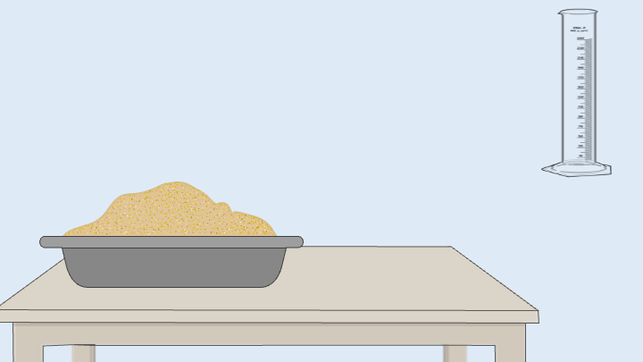
 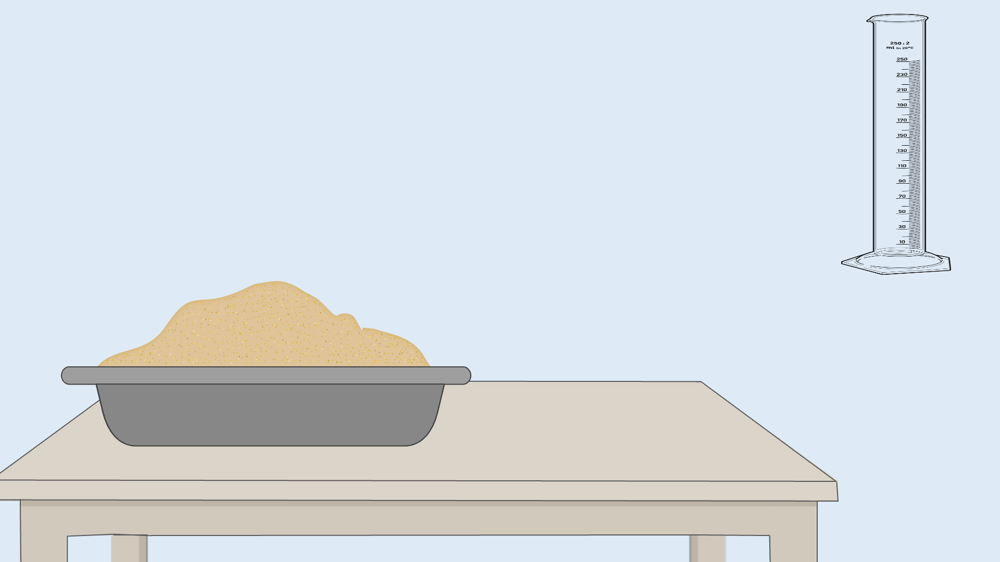
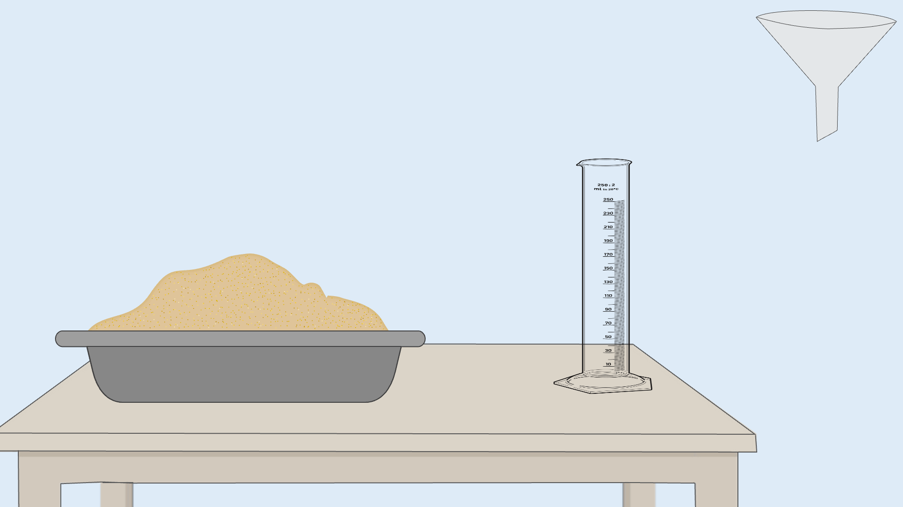
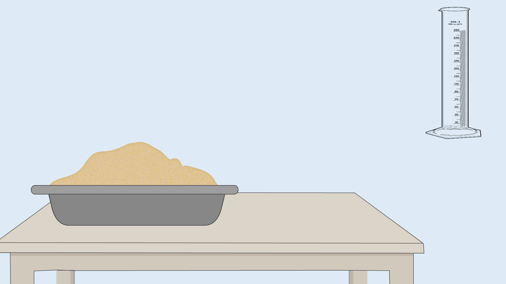
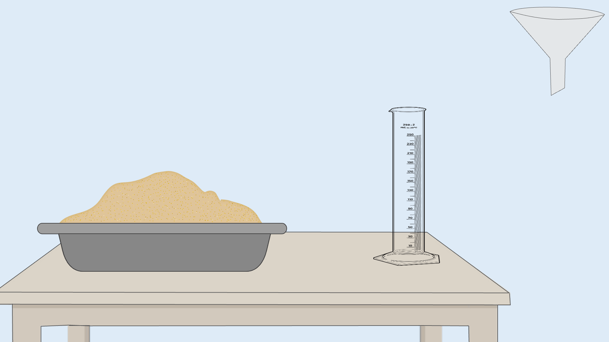


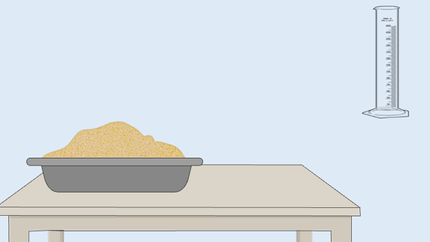
STEP
4
Gently level off the top surface of sand using a steel ruler.
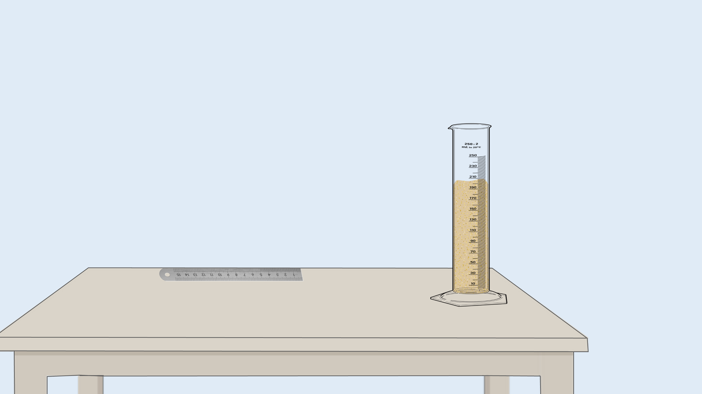 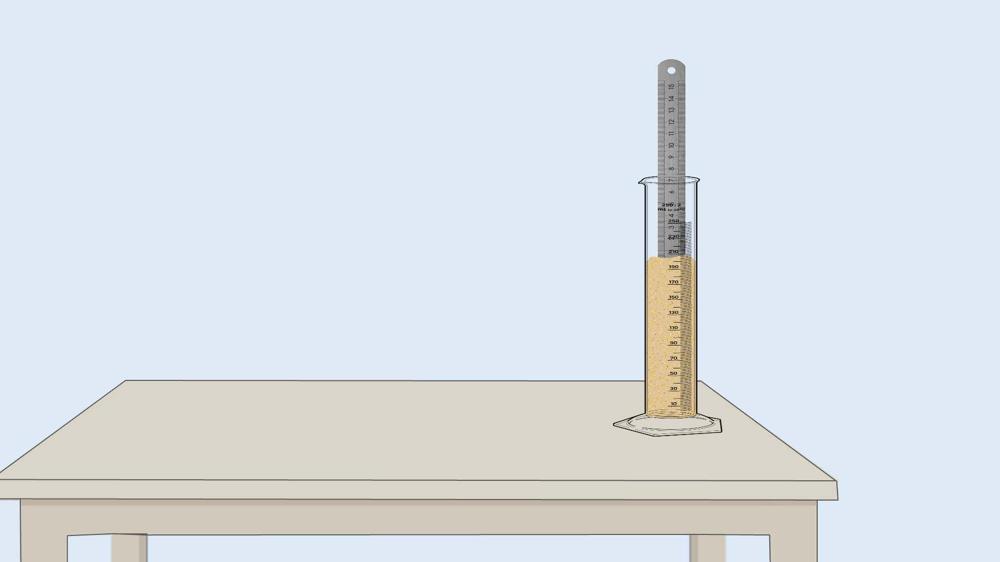
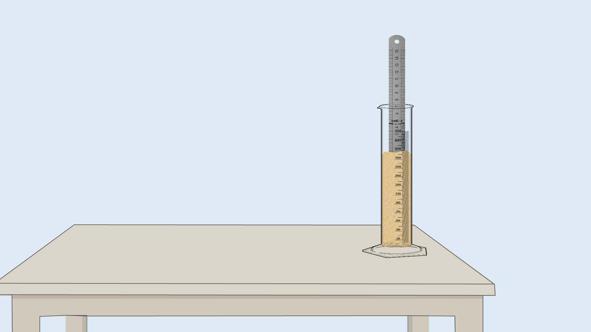

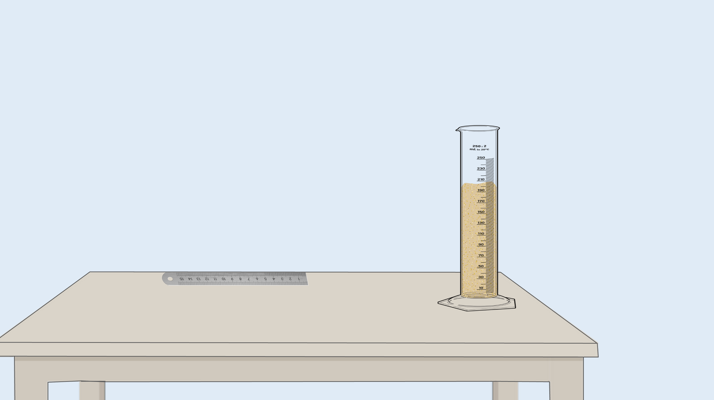
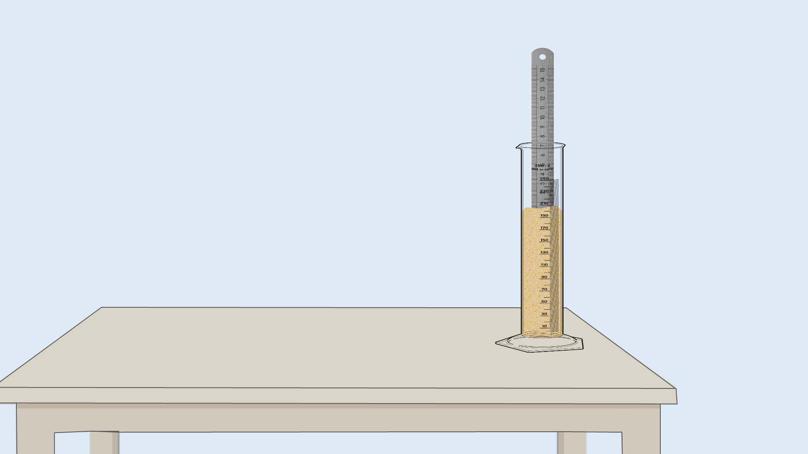